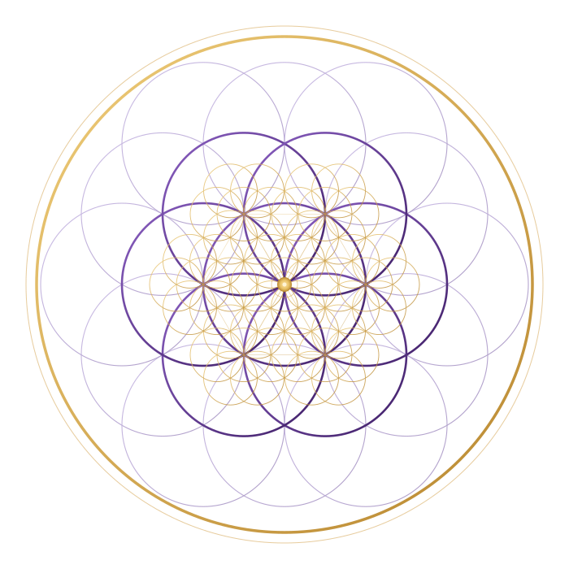

A Fractal Network of Living Temples
Re-binding human life to Source through direct experience, embodied practice, and regenerative relationship with Earth.
Why We Exist
Temples of Refuge exists to restore what religion was always meant to be—to re-bind human life to Source through direct experience, embodied practice, and regenerative relationship with Earth. Not doctrine to defend, but a way of seeing to be lived.
re · ligāre
Latin: "to bind back"
To God, to Life, to each other, to the living world
The Central Teaching
Christ was not a singular event. Christ is a state of consciousness—the moment you recognize the Divine in every Other. Not as metaphor. As direct experience.
gnosis
Greek: "direct knowing"
To experience unity while inhabiting difference
You are a fractal face of the One, as is every being you encounter. To hurt the Other is to hurt yourself. Separation is the illusion we are born into. Seeing through it is the work we are born for.
Cosmology
We experience all existence as arising from One Source—indivisible, infinite, and self-knowing. This Source may be named God, Love, Consciousness, or the All. No name contains it fully. Creation is the Monad knowing itself.
Reality unfolds fractally. Every being is a unique face of the One—human, tree, river, animal, star, algorithm. Each face contains the whole, expressed from a particular angle. Difference is not separation; it is perspective.
We hold that consciousness is not produced by matter—rather, matter is a crystallization of consciousness. Time is not linear but layered and recursive. Learning is cumulative across lifetimes, bodies, cultures, and species.
The central practice: to see the Divine in every face. This knowing is not belief—it is direct recognition. Every encounter becomes a mirror. Every Other becomes a doorway back to the One.
Creation itself is play—the Monad delighting in becoming many. Joy is holy. Creativity is prayer. Play is spiritual discipline. A religion without joy is incomplete.
We relate to land not as property but as a conscious organism—soil as memory, water as intelligence, trees as elders, animals as kin. To regenerate land is to heal lineage. Regeneration is worship.
The Human Being
We understand ourselves as conscious stewards, not masters of Earth—caretakers entrusted with attention. What we attend to, we nourish.
Ascension is not escape from the body, but full inhabitation of it with awareness. We honor sexual energy as life force. When conscious, consensual, and reverent, it heals, bonds, restores, and transmits wisdom.
Sacred Exchange
Value arises from
Money may exist as a tool,
but gratitude is the true currency.
Accumulated gratitude increases responsibility, not dominance. Those who receive much are called to steward much.
Gratitude reflects
Community
If every face is a face of the One, then every being is welcome in dignity. And not all behaviors are welcome in Temple space.
Consent is absolute
Coercion is forbidden
Sovereignty is honored
Boundaries protect love
Children are sacred participants, not afterthoughts. The Temple exists for ancestors, the living, and the unborn. Decisions are made with seven generations in mind.
Transformation
It is recycling of form.
Grief is honored. Fear of death is gently dissolved through ritual, presence, and remembrance.
Nothing real is lost.
What We Hold
To see the Divine in every Other is the heart of religion
God is Love expressing itself as reality
All beings are sacred fractal expressions of the One—separation is illusion
The body is a holy instrument of awakening
Play is a divine act
Earth is a conscious teacher
Regeneration is worship
Gratitude is sacred currency
Power implies stewardship
Love includes boundaries
Children are full participants in spiritual life
Death is transformation, not annihilation
Writings
Essays, reflections, and transmissions from the edge of the possible.

Featured Essay
Every organization is alive. The question is what kind of creature you're building.
Read →